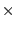
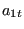
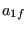
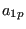
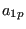
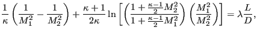
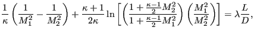

Keyword type: step
With *CONSTRAINT one can define constraints in a sensitivity step. It can only be used for design variables of type COORDINATE. Furthermore, exactly one objective function has to be defined within the same sensitivity step (using the *OBJECTIVE keyword).
A constraint is an inequality expressing a condition on the objective function. The inequality can be of type ``smaller than or equal'' (LE) or ``larger than or equal'' (GE). The reference value for the inequality is to be specified by a relative portion of an absolute value (the latter in the units used by the user). For instance, suppose the user introduces an absolute value of 20 and a relative value of 0.9 for a LE constraint on the mass. Than the mass is not allowed to exceed 0.9  20 = 18 mass units. If the absolute value is zero, the initial value is taken, e.g. for the mass this corresponds to the mass at the start of the calculation.
Right now, the following constraints are allowed:
|  | (465) |
where  is the von Mises stress in node i,  and

are user-defined parameters. The higher
and

are user-defined parameters. The higher  the closer  is to the actual
maximum (a value of 10 is recommended; the higher this value, the sharper the
turns in the function).
is the target stress, it
should not be too far
away from the actual maximum.
the closer  is to the actual
maximum (a value of 10 is recommended; the higher this value, the sharper the
turns in the function).
is the target stress, it
should not be too far
away from the actual maximum.
First line:
Second line:
Example: *CONSTRAINT. MASS,E1,LE,,3.
specifies that the mass of element set E1 should not exceed 3 in the user's units.
Example files: .